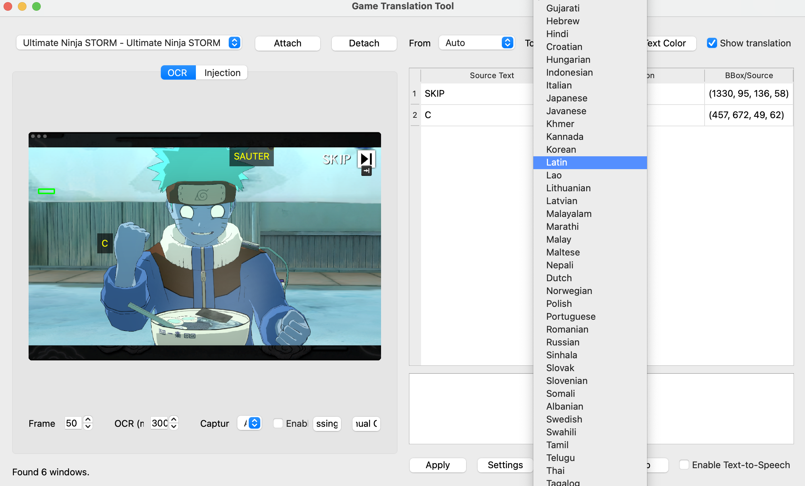
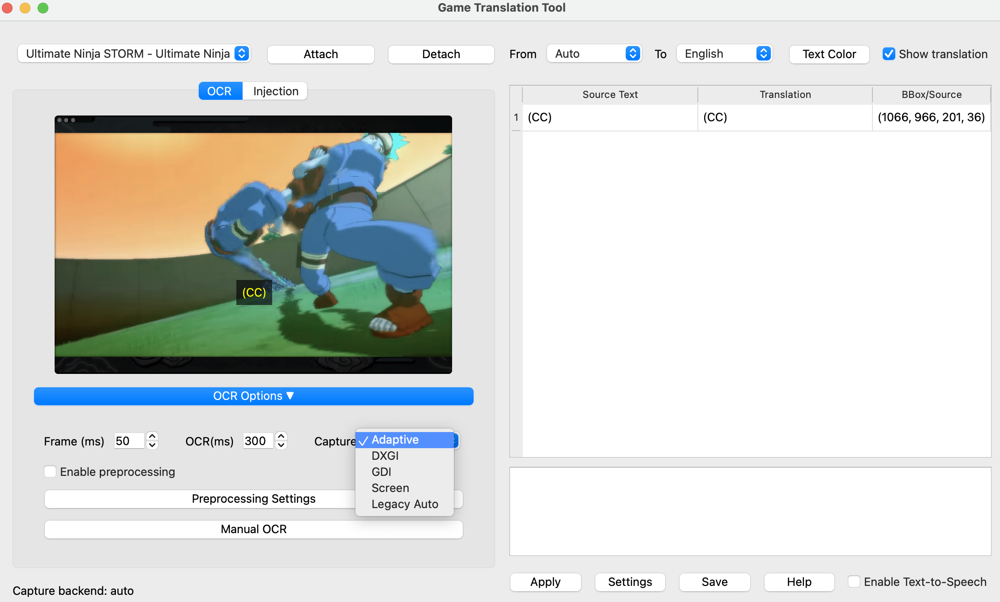
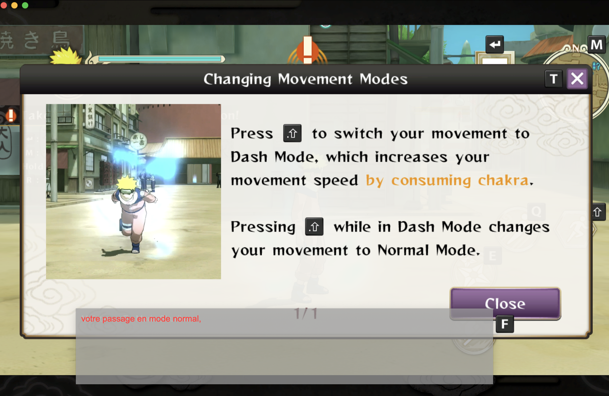
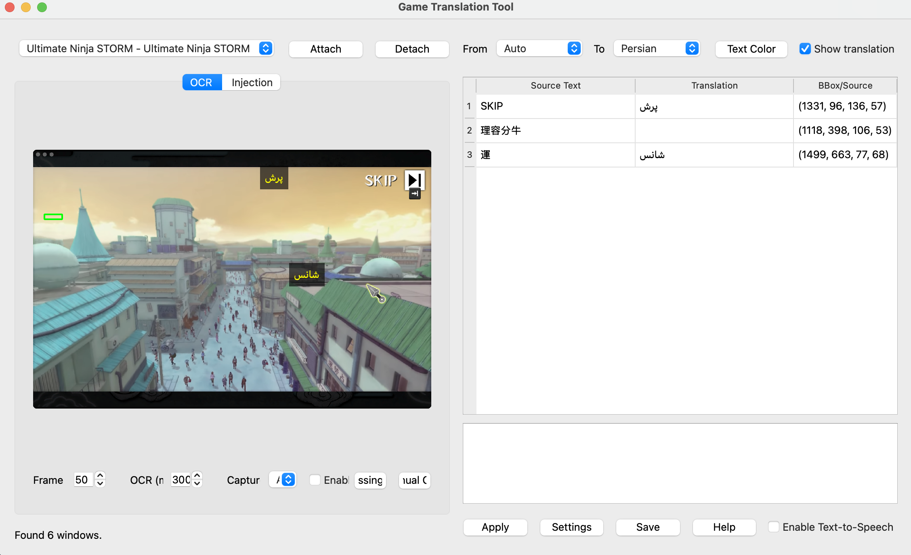

JamX is a software tool designed to let users translate computer games, allowing in-game text to be edited from one language to another and shared with others.
Translate game text in real-time
The video shows JamX capturing text from the screen and processing it with OCR in real-time
Support for multiple languages
The video shows the system detecting text in different languages and converting it into speech output dynamically.
In-game Text Translation
The video demonstrates the translator's ability to capture and translate in-game text, showcasing its real-time translation capabilities.
Easy to use interface
The video highlights the user-friendly interface of the translator, showing how users can easily select and capture windows for translation.
Team 37 - JamX Translator